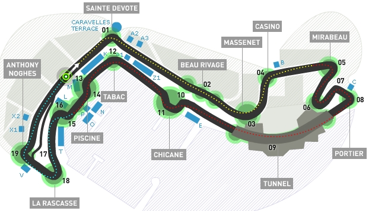

Monza - El Templo de la Velocidad
Conocido como el Templo de la Velocidad, el Autódromo Nacional de Monza es uno de los circuitos más rápidos del calendario de Fórmula 1. Inaugurado en 1922, Monza ha sido testigo de momentos legendarios y es una de las sedes más emblemáticas del Gran Premio de Italia.

Spa-Francorchamps - El Desafío de la Naturaleza
Situado en las colinas de Bélgica, Spa-Francorchamps es famoso por su trazado técnico y su curva más icónica: Eau Rouge. Este circuito combina alta velocidad y giros técnicos, siendo un favorito tanto de pilotos como de aficionados.
Montecarlo - Elegancia y Precisión
El circuito urbano de Montecarlo, en el corazón de Mónaco, es sinónimo de glamour y precisión. Las estrechas calles y los riesgos de este trazado lo convierten en una de las carreras más desafiantes del calendario, donde solo los mejores triunfan.
El Circuito de Las Vegas
El circuito urbano de Las Vegas es una incorporación reciente y emocionante al calendario de la Fórmula 1. Ubicado en el corazón de la famosa franja de Las Vegas, este trazado combina velocidad, técnica y espectáculo. Con una longitud de más de 6 kilómetros, incluye rectas largas donde los monoplazas alcanzan velocidades impresionantes y curvas desafiantes que ponen a prueba la destreza de los pilotos. Además, el entorno vibrante de la ciudad, con sus icónicas luces de neón y hoteles de lujo como telón de fondo, hace de esta carrera un evento único que captura la esencia del glamour y la adrenalina de la Fórmula 1.